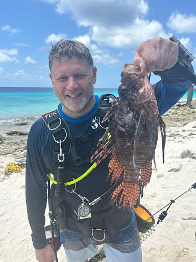

Deaf Coast Divers
Where Diving is SERIOUS Business
Like, totally serious. If you're not spending 30 minutes staring at
an octopus one dive and charging on your Scuba Buddy like a mount at
a Lionfish with a spear the next, you're doing it wrong! You dive
with a family, and have fun as a family!
FYI: We mostly maintain this website to help with inviting new
not-yet-diving friends along =).
About Us
We are a Found Family at DeafCoast. We are friends - no customers here!
We aren't structured, we're not a Dive Shop, just a group of
like-minded friends. While we do have instructors and DiveMasters in
our group, they work under the auspices of dive shops (not DeafCoast).
We don't schedule classes or charge for coordinating entire trips -
we're not in it for the money! As friends, any one of us may pitch and
run the trips we join them on!
Why "DeafCoast" ? - In general, about half of us on any trip are
deaf! Some (But not all!) of the others can sign or are interested in
learning sign. We aim to be all inclusive - any and all abilities or
disabilities.
Safety
Safety is best considered as the leader of every team. Follow Safety, and have fun otherwise!
- Safety of the divers - Yourself, buddies, and others.
- Safety in communication - In and out of water.
- Safety of the environment - Coral, reefs, and native animals.
- Safety of the stomach - kill and eat invasive species.
Our Family
Instructor and Founder Rob Drake
Past Trip Highlights
2021 Bonaire Group

Upcoming Trips
2021 Bonaire Group